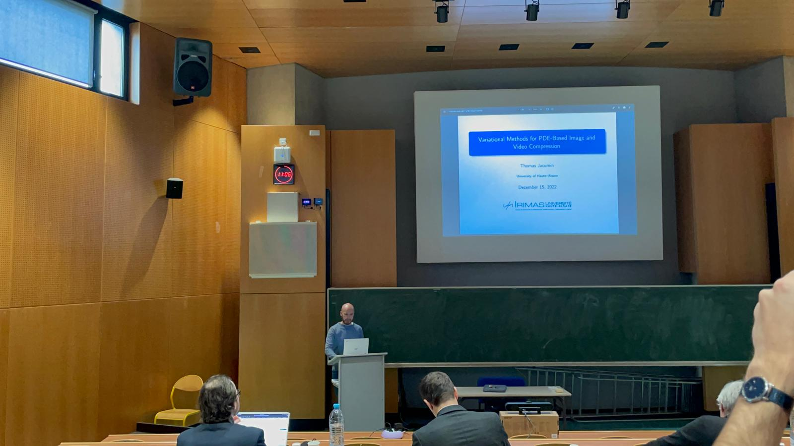

Zakaria Belhachmi and Thomas Jacumin
Accepted in Journal of Mathematical Study
hal: hal-04829141
Thomas Jacumin and Andreas Langer
Numerical Algorithms, March 2025
doi: 10.1007/s11075-025-02044-6
Zakaria Belhachmi and Thomas Jacumin
Asymptotic Analysis, October 2024
doi: 10.3233/ASY-241944
Zakaria Belhachmi and Thomas Jacumin
Communications in Nonlinear Science and Numerical Simulation, June 2022
doi: 10.1016/j.cnsns.2022.106278
Thomas Jacumin, Roland Masson, Laurent Jeannin, and Arthur Dartois
ECMOR 2026, September 2026
doi: 10.3997/2214-4609.202637078
Thomas Jacumin, Roland Masson, Laurent Jeannin, and Arthur Dartois
to appear
Zakaria Belhachmi and Thomas Jacumin
September 2022
arXiv: 10.48550/arXiv.2209.14706
Thomas Jacumin
Zenodo, February 2025 · Associated with "An Adaptive Finite Difference Method for Total Variation Minimization" · Python
doi: 10.5281/ZENODO.14898816
Thomas Jacumin
Zenodo, December 2024 · Associated with "Optimal Transport Model of Optical Flow Estimation: Constant and Varying Illumination Cases" · Python
doi: 10.5281/ZENODO.14358739
Thomas Jacumin
Zenodo, September 2022 · Associated with "Adjoint Method in PDE-Based Image Compression" · Python
doi: 10.5281/ZENODO.13825644
